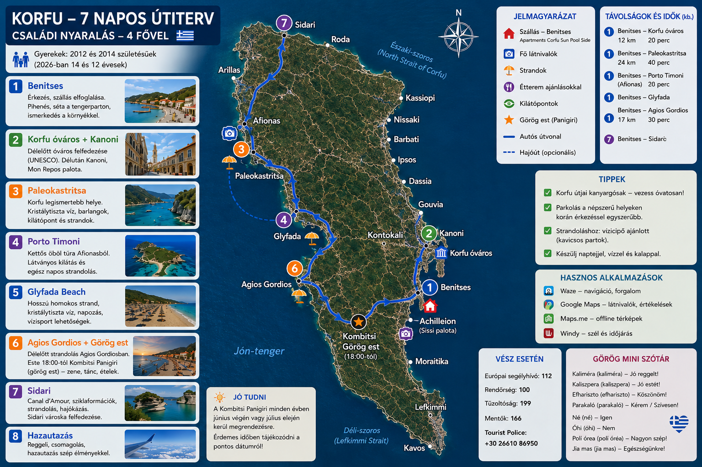

🏨 Szállás
Apartments Corfu Sun Pool Side
🗺️ Napi programok
Szállás + Benitses
Apartments Corfu Sun Pool Side, első fürdés és esti séta.
Korfu óváros + Kanoni
Liston, Régi Erőd, sikátorok, Kanoni repülőles és Vlacherna kolostor.
Paleokastritsa
Türkiz öblök, hajókirándulás, barlangok, snorkeling és Bella Vista.
Porto Timoni / Afionas
Kétöblös strand, gyalogtúra Afionasból.
Glyfada strand
Homokos strand, lassan mélyülő víz, napágyak és naplemente.
Agios Gordios + Kombitsi görög est
Délelőtt Agios Gordios strand, este 18:00-tól Kombitsi Panigiri.
Kombitsi Panigiri
Görög falusi ünnep élő zenével, tánccal, souvlakival és borral.
Sidari + Canal d’Amour
Sziklák, homokos partszakasz, fürdés és esti séta.
Benitses + hazautazás
Utolsó fürdés, csomagolás, tankolás, autóleadás, repülőtér.
🗺️ Térkép
A térkép offline is látható.

🏖️ Strandok
Agios Gordios
Homokos, naplementés strand.
Glyfada
Hosszú homokos strand.
Paleokastritsa
Türkiz öblök, snorkeling.
Porto Timoni
Kétöblös strand, túrával.
Benitses
Közeli, aprókavicsos helyi strand.
🍽️ Éttermek
Paxinos
Benitses – görög taverna.
Klimataria
Benitses – családias hangulat.
Sebastian’s Taverna
Agios Gordios – jó ebéd.
Pane e Souvlaki
Korfu óváros – gyors, jó.
🛒 Bevásárlás
Lidl Corfu
Nagybevásárlás, víz, snack.
AB Vassilopoulos
Szupermarket, jó választék.
Benitses market
Kisebb helyi bevásárlás.
📞 Segélyhívók
- 112 – Európai segélyhívó
- 100 – Rendőrség
- 166 – Mentő
- 199 – Tűzoltóság
🇬🇷 Görög szótár
| Görög | Kiejtés | Magyar |
|---|---|---|
| Καλημέρα | Kaliméra | Jó reggelt |
| Καλησπέρα | Kalispéra | Jó estét |
| Γεια σου | Jászu | Szia |
| Ευχαριστώ | Efharisztó | Köszönöm |
| Παρακαλώ | Parakaló | Kérem / szívesen |
| Ναι | Ne | Igen |
| Όχι | Óhi | Nem |
| Πόσο κάνει; | Pószo káni? | Mennyibe kerül? |
| Λογαριασμό παρακαλώ | Logariaszmó parakaló | A számlát kérem |
| Νερό | Neró | Víz |
| Παραλία | Paralía | Strand |
☀️ Időjárás
Június végén általában 28–32 °C, a tenger kb. 23–24 °C.
💶 Költségek
- Napágy + napernyő: kb. 10–25 € / nap
- Vacsora 4 főre: kb. 50–90 €
- Gyros / pita: kb. 4–7 €
- Parkolás: kb. 2–8 €
- Üzemanyag: kb. 50–80 € / hét